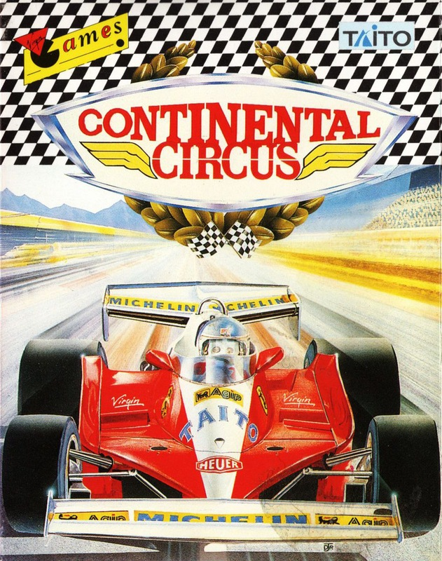
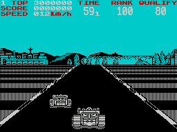

Continental Circus


{kind=link}

| Publisher: | Virgin |
| Price: | £8.99 / £14.99 |
| Year: | 1989 |
| Source: | CRASH, Issue 69 |

Continental Circus was covered in the Arcade Action section back in October 1988, and now here’s the chance to enjoy all the thrills and spills of racing without needing pockets full of 10ps. Of course the coin-op had impressive 3-D glasses stuck on the front of it, and unfortunately the computer version’s done away with this luxury.
To succeed in Continental Circus you have to complete each of the race tracks and cross the finish line well up in the ranking. You start off in Brazil where you must finish in the top 80 to go on to the USA. Get in the top 60 here to go on to Japan and so on.

This gets a little tricky later on when you’re expected to finish in the top three! Good driving skills are essential if you want to do well, but conditions are not on your side. Some of the levels are graced with rain pouring down onto the track causing much slipping and sliding to and fro (or that could have been my drving!).
Collisions with other cars in the race are not immediately fatal as in other simulations. In Continental Circus the car starts to smoke, and a sign comes up telling you to enter the pits. if you don’t do that soon, the car catches fire and explodes, BOOM: one chargrilled driver!
All the sprites in Continental Circus are excellent, if somewhat reminiscent of WEC Le Mans. They include girls in skimpy swim suits running onto screen holding up cards and waving flags (fwoor!). The screen is split into two monochrome colours, with just a touch of red coming onto the car when it is on fire.
The hills, bends and perspective have all been excellently programmed, giving you the feeling of being thrown around every corner. Music and effects are also of a very high standard. Continental Circus was a fantastic arcade machine and it has now been brought onto your computer with hardly any loss of addictiveness and playability. Jump into a Formula One car and have some real tyre screeching fun.
NICK — 86%
I love the arcade game with its huge 3-D glasses and comfortable sit-down cabinet. Even without these extras this version offers a damn good racing game. Especially impressive are the neat little graphical and sonic touches that liven it up, as when passing a rival car hearing its engine sound approach and then recede into the distance. Varied weather, much screaming round bends at breakneck speed and the thrill of winning make Continental Circus well worth forking out for.
MARK — 93%
RATING
Incredibly playable and very well programmed race ’em up!
| Presentation: | 88% |
| Graphics: | 85% |
| Sound: | 86% |
| Playability: | 89% |
| Addictivity: | 89% |
| Overall: | 90% |